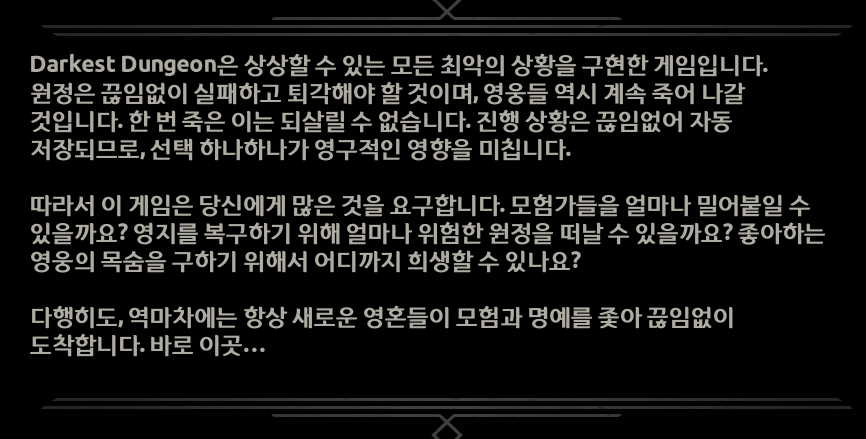
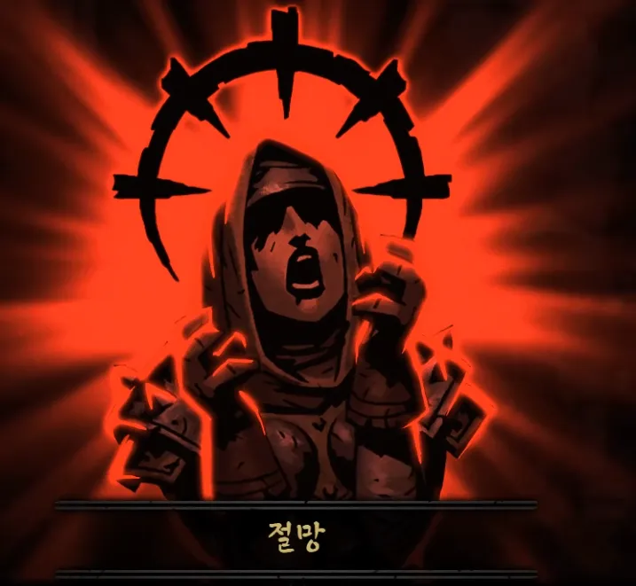
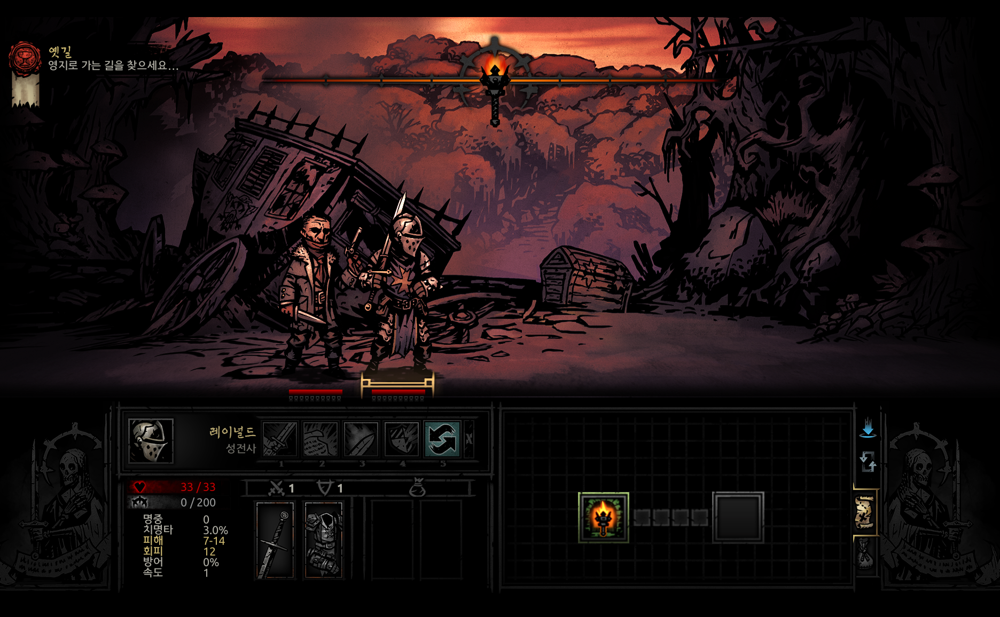
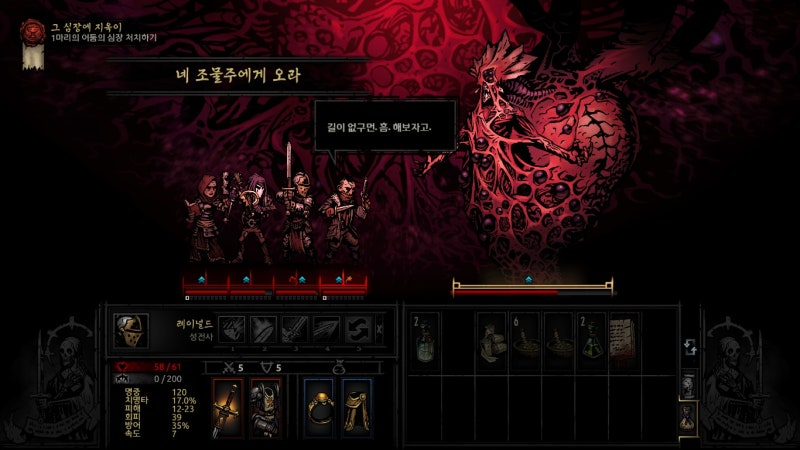
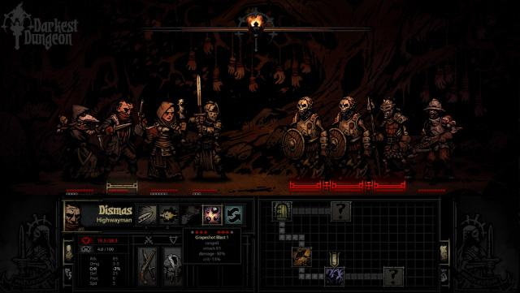
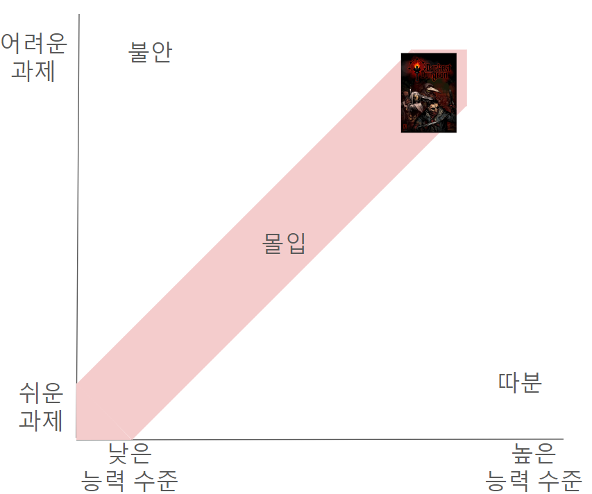
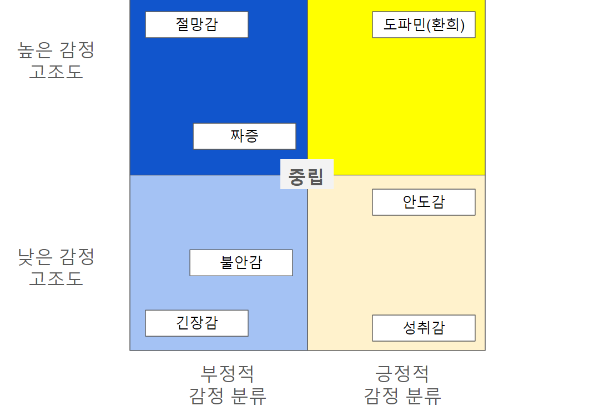
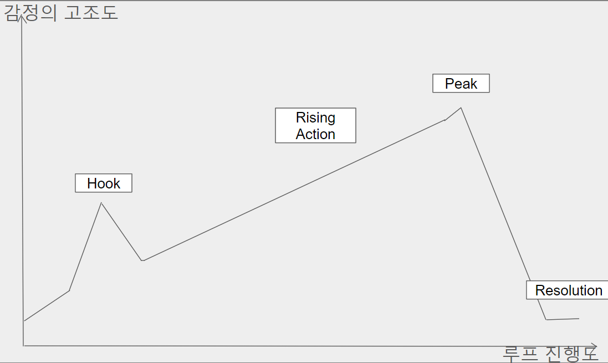
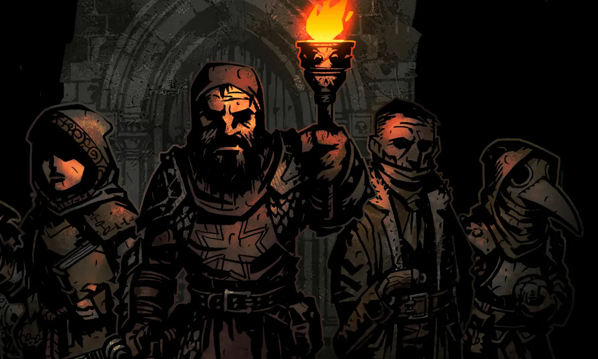
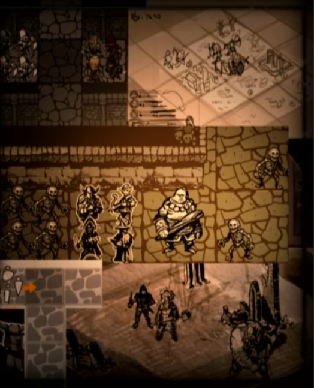

📝 Game analysis📝게임 분석문
From the developers’ perspective: key ideas(개발자 관점) 개발자들이 중요하게 생각한 키워드:
“… being an adventurer is a shit line of work.” — Chris Bourassa, co-creator of Darkest Dungeon모험가가 되는 것은 x같은 일이다 ( … being an adventurer is a shit line of work),
- Chris Bourassa, co-creator of Darkest Dungeon
Imperfection · Cosmic horror · Human reactions to stress완벽하지 않음 코스믹 호러 인간의 스트레스에 대한 반응
<A game that brings every imaginable worst-case scenario to life><상상할 수 있는 모든 최악의 상황을 구현한 게임>

Imperfect elements완벽하지 않은 요소들
- Hero stress, incomplete combat information and story, and deliberately “bad” design.‘영웅’의 스트레스, 불완전한 전투 정보와 스토리, 의도적인 ‘나쁜’ 디자인 등
The idea of imperfection runs through every system in the game.완벽하지 않다 라는 키워드는 이 게임의 모든 시스템을 관통한다.
The defining stress system makes it clear that, unlike heroes in many RPGs, these characters are not perfect moral exemplars. They react to stress in human ways: breaking down and harming their companions, or finding virtue in a crisis and turning the battle around. 이 게임의 핵심 차별점인 스트레스 시스템은 여타 RPG와는 다르게 영웅들이 완벽한 도덕의 화신이 아니라는 것을 가시적으로 보여준다. 영웅들은 스트레스에 대해 지극히 인간적인 반응을 보이는데, 정신이 붕괴되어 다른 영웅들에게 부정적인 영향을 미칠수도 있지만 위기의 순간에서 각성해 전투를 승리로 이끌기도 한다.
Almost every aspect of combat is imperfect. Even the information used to make decisions—turn order, damage, and resistance—is shaped by random variables. Automatic saving gives choices lasting consequences, forcing players to take risks with uncertain, incomplete information.이밖에도 전투에서 상상할 수 있는 거의 모든 요소들은 불완전하다. 선택을 하기 위해 참고할 수 있는 정보들마저 ‘턴’의 개념을 비롯해 데미지, 저항 등 대다수의 것들이 랜덤 변수로 결정된다. 설상가상으로 내가 한 선택은 자동저장되어 영구적인 영향을 미치므로, 플레이어는 불확실하고 불완전한 정보에 기대어 위험한 선택을 만들도록 강요된다.
The developers believed fear was most effective when certainty was absent. The game’s imperfect elements work together to build Darkest Dungeon’s distinctive bleak atmosphere.개발자들은 확실함이 결여된 상태에서 공포라는 감정이 제일 잘 표현될 수 있다고 생각했고, 이러한 완벽하지 않은 게임의 요소들은 통일성있게 다키스트 던전 특유의 암울한 분위기를 구축해낸다.
The developers reportedly designed Darkest Dungeon to evoke the uncertainty and tension of playing poker.개발자들은 다키스트 던전을 플레이하면서 마치 포커를 플레이하는듯한 불확실함과 긴장감을 느끼길 의도하며 게임을 디자인했다고 한다.
From the player’s perspective: what defines Darkest Dungeon(플레이어 관점) 다키스트 던전의 특징
Heroes under stress스트레스를 받는 영웅들

- The heroes in Darkest Dungeon are deeply human. As they explore, their interactions continually expose them to stress.다키스트 던전의 영웅들은 지극히 인간적이기에 던전을 탐험하면 각종 상호작용을 통해 끊임없이 스트레스를 받게된다.
- When heroes reach extreme stress, they may become afflicted—or virtuous.영웅들의 스트레스가 극한에 이르게 되면, 그들의 정신이 붕괴하기도 각성하기도 한다.
⇒ Players must therefore pay attention to their heroes’ stress throughout an expedition. This strengthens the tension and makes strategic decisions more consequential.⇒ 따라서 플레이어는 던전 탐험 과정에서 영웅들의 스트레스 관리에 주의를 기울이게 되며, 이는 게임의 긴장감과 전략적인 결정의 중요성을 더욱 부각시킨다.
⇒ When a hero beats the odds and becomes virtuous, the contrast with the despair the player expected creates an extraordinary sense of elation.⇒ 또한, 낮은 각성확률을 뚫고 영웅이 각성했을때, 플레이어는 기대되었던 절망감과 상반되는 감정을 통해 엄청난 환희를 느끼게 된다.
Incomplete, unforgiving dungeon exploration — learning the hard way불완전하고 불친절한 던전 탐험 - 맞으면서 배우세요

- Players enter a dungeon knowing little beyond its length and level.플레이어는 던전의 길이나 레벨 정도의 정보밖에 알 수 없는 채로 던전에 진입한다.
- Before entering a dungeon, the game does not explain which items are needed for interactions and survival, or how many to bring.던전에 진입하기 전 , 각종 상호작용이나 던전 생존에 필요한 아이템이 어떤게 얼마나 필요한지 일절 알려주지 않는다.
- Players do not know the dungeon’s layout or where enemies will appear. Scouting—the only way to obtain this information—happens only occasionally, by chance.던전이 어떤 형태로 생겼는지, 적들과 어느 지점에서 조우할지조차 알 수 없다. 유일하게 이를 알 수 있는 ‘정찰’도 가끔 낮은 확률로만 이루어진다.
- The game does not explain what an unfamiliar dungeon object will do. Players must discover its effects through experience.던전에서 처음 보는 오브젝트가 어떤 결과를 초래할지 전혀 알려주지 않는다. 오직 경험에 의해서 직접 알아내야 하는 수밖에는.
⇒ The deliberately confusing dungeon environment keeps players in a state of uncertainty. These elements help create the fear and tension at the heart of Darkest Dungeon.⇒ 개발자들의 의도에 따라 의도적으로 혼동을 주기위해 조성된 던전 환경은 플레이어를 지속적으로 확실함이 결여된 상태에 빠트린다. 이러한 요소들은 다키스트 던전의 키워드인 공포감과 긴장감을 효과적으로 조성하는데 기여한다.
Deliberately “bad” design 의도적인 ‘나쁜’ 디자인

- Darkest Dungeon openly breaks an unwritten rule of game design: “Never take away what a player has worked hard to build without context.”다키스트 던전은 게임사에서 불문율처럼 내려오던 디자인 계명인 “절대 플레이어가 열심히 일구어 놓은 것을 맥락없이 빼앗지 마시오”를 보란듯이 어긴다.
- In the final boss fight, the player must sacrifice a beloved hero. As shown above, the game displays only “Come Unto Your Maker”, without explaining the next action. The player is left wondering what is happening and what to do.마지막 보스전에스는 정든 영웅 한명을 무조건 한명 희생시켜야 하는데, 이때 위 사진과 같이 플레이어에게 “네 조물주에게 오라” 라는 문구만 띄워놓고는 다음 액션에 대한 부차적인 설명을 일절 해주지 않는다. 자연히 플레이어는 “어쩌지?”, “무슨 일이지?” 등의 당혹감을 느끼게 된다.
⇒ Limited information and deliberately “bad” design that breaks established conventions permeate the game. They make the player feel powerless, reinforcing its cosmic-horror theme.⇒ 이런 식으로 게임 전체에 녹아든 제한된 정보와 기존의 불문율을 깨뜨리는 의도적인 ‘나쁜 디자인’들은 플레이어로 하여금 무력감을 느끼게 해서 게임의 테마인 코즈믹 호러를 느낄 수 있게 디자인 되어있다.
Strategic turn-based combat in a maelstrom of probability확률지옥에 빠진 전략적 턴제 전투

- Elements of chance운적 요소
- Every action in Darkest Dungeon’s combat has a probabilistic element.다키스트 던전의 전투에서 모든 행동은 확률이 존재한다.
- Turn order, damage ranges, hit chances, and critical hits all involve randomness. Players must make careful, risky choices based on uncertain information.턴 순서, 플레이어 데미지 범위, 적중 확률, 크리티컬 등 모든 것이 랜덤이기에 불확실한 정보를 기반으로 위험하고 신중한 선택을 해나가야한다.
⇒ Every battle can take an unexpected turn. Players cannot relax when things are going well, but they also have a reason to hold on to hope when the situation looks desperate.⇒ 따라서 모든 전투는 플레이어가 예측 불가능하게 흘러가기 때문에 상황이 좋아도 방심할 수 없고, 상황이 절망적이어도 끝까지 희망을 놓지 않게 된다.
- Every action in Darkest Dungeon’s combat has a probabilistic element.다키스트 던전의 전투에서 모든 행동은 확률이 존재한다.
- Strategic elements전략적 요소
- Darkest Dungeon uses turn-based combat. Players assemble a roster of four from a pool of roughly twenty available heroes.다키스트 던전은 가용 가능한 약 20명의 영웅중 4명의 로스터를 구성해서 임하는 턴제 전투 방식으로 진행된다.
- Combat requires considering classes, skills, party combinations, and the range restrictions imposed by positioning.캐릭터의 직업, 기술, 조합 뿐 아니라 자리 배치에 따른 사거리 제한을 모두 고려하며 전투에 임해야 한다.
- A single positioning mistake may leave a hero stuck attacking corpses at the front.자리 배치 하나라도 잘못되면, 앞에서 시체나 때리고 있어야할지도.
- Players may need to prepare the right consumables for the situation in advance.상황에 따라 적절한 소모 아이템을 미리 구비해야 할 수도 있다.
⇒ These elements sustain tension and emphasise the importance of decisions throughout play. They also offer the thrill of overcoming unpredictable situations and fresh challenges.⇒ 이러한 요소들은 다키스트 던전을 플레이하는 동안 지속적인 긴장감과 의사 결정의 중요성을 강조한다. 또한 플레이어에게 매 순간 예측불가능한 상황을 뚫고 새로운 도전과제를 클리어해나가는 짜릿한 경험을 선사한다.
Conclusion: high difficulty + demanding strategic depth = immersion결론: 높은 난이도 + 높은 전략적 깊이의 요구도 = 몰입
Immersion generally emerges when the difficulty of a task is balanced with the player’s skill level.기본적으로 게임에서의 몰입은 과제의 어려운 정도가 플레이어의 능력 수준과 균형을 이룰때 나타난다.
The strategically deep systems described above demand considerable player skill to clear a dungeon. Its deliberately unwelcoming elements increase the difficulty further, balancing challenge against the required skill and producing strong immersion.다키스트 던전은 위에서 기술한 전략적으로 깊이 있는 시스템을 구축함으로서 자연히 플레이어에게 던전을 클리어하는데 높은 능력 수준을 요구하고, 거기에 더해 불친절한 게임내 구성요소로 난이도를 대폭 상승시켜 둘의 균형을 이루어 강한 몰입감을 조성시킨다는 특징이 있는 게임이다.

An analysis of fun: emotion → experience → feature감정 → 경험 → 피쳐로 이어지는 재미 분석
“Detecting and understanding subtle emotions is a designer skill” “미묘한 감정을 감지하고 이해하는 것은 디자이너의 능력이다.”- Tynan Sylvester <Designing Games> — 타이넌 실베스터, 《Designing Games》
*This analysis works backwards through the MDA framework, starting with players’ emotions and tracing them to the features that create them.*MDA 프레임워크를 역순으로 분석하여 플레이어가 느끼는 감정으로부터 피처를 구성하였습니다.
A game with intense negative and positive emotions부정적인 감정과 긍정적인 감정의 고조도가 동시에 높은 게임
<Four quadrants of emotion, classified by intensity and valence><감정의 고조도와 분류에 따른 4분면>

As shown above, Darkest Dungeon produces more intense negative emotions than many games. Its mechanics and visuals deliberately sustain anxiety and tension.위에서 볼 수 있듯이 다키스트 던전은 기본적으로 부정적인 감정의 고조도가 타 게임대비 높은 편이고, 게임 메카닉과 비주얼적인 요소에서 의도적으로 불안감과 긴장감을 끊임없이 조성한다.
As a result, contrasting positive experiences produce proportionately intense positive emotions, such as elation.그렇기에 여기와 대비되는 긍정적인 경험을 했을때 환희와 같은 긍정적인 감정의 고조도 역시 비례해서 높은 게임이다.
Pacing emotional intensity감정 고조도의 완급 조절
Such emotional intensity could exhaust players or create excessive tension. The following gameplay loop manages that intensity with careful pacing.위와 같이 높은 감정 고조도로 인해 자칫 플레이어가 과도한 긴장감이나 피로도를 높일 수 있는 부분을 아래와 같은 게임루프를 통해 영리하게 완급조절했다.
<Emotional intensity over the course of play><감정의 고조도를 게임의 진행정도에 따라서 나타낸 그래프>

1) Hook: assembling the roster and entering the dungeon1) Hook: 로스터 짜기와 던전 입성
- Assembling the roster and entering a dungeon create anticipation and tension.로스터를 짜고 던전을 입성할때 플레이어에게 기대와 긴장감을 심어준다.
2) Rising action: progressing toward the objective inside the dungeon2) Rising Action: 던전 입성 후 목표 진행
- Players explore, fight, and make progress toward their objective.던전을 탐험하며 전투를 치르면서 목표를 달성해나간다.
- As progress increases, so does the cost of failure, gradually raising the tension.목표가 진척될수록 실패했을때의 리스크가 점점 더 커지며 긴장감이 고조된다.
3) Peak: defeating the boss or completing the objective3) Peak: 보스 클리어/ 목표 달성
- Defeating the boss or completing the exploration objective brings achievement, elation, and relief to an emotional peak.보스를 깨거나 탐사 목표를 달성했을때 성취감,환희, 안도감 등 감정이 절정에 다다른다.
4) Resolution: returning to the Hamlet4) Resolution: 영지 귀환
- Returning to the Hamlet lets the tension subside. Players tend to their returning heroes, rest, and prepare for the next expedition.영지에 귀환해 고조되었던 긴장감을 진정시키고, 던전에서 돌아온 영웅들을 정비하고 쉬면서 다음 탐험을 준비한다.
1. Emotion → experience1. 감정 → 경험
Dopamine / Elation도파민 (환희)
- Hero virtue영웅 각성
- At the stress threshold, the player expects the despair of an affliction—but a radiant illustration appears and the hero becomes virtuous instead.스트레스가 100을 초과하면서 영웅의 정신이 붕괴하면서 유저가 느끼는 절망이 엄청난데 이때 빛나는 일러스트와 함께 영웅의 기상이 발동할 때
- Critical hits치명타
- When an attack lands a critical hit, deals more damage than expected, and relieves the hero’s stress적을 공격할 때 치명타 문구와 함께 내가 예상한 것보다 더 큰 피해를 입히면서 캐릭터의 스트레스가 해소될 때
- When a critical heal restores more health than expected and also relieves a hero’s stress아군의 체력을 회복할 때 역시 치명타 문구와 함께 예상한 것보다 더 많은 체력을 회복하고 캐릭터의 스트레스가 해소될 때
- Dodge회피
- Surviving at low health by dodging an enemy attack체력이 얼마 없을 때 적의 공격을 회피하면서 살았을 때
- Similarly, dodging a stress attack just before a hero reaches breaking point비슷한 맥락으로 스트레스로 인한 붕괴가 얼마 안 남았는데 스트레스 공격을 회피할 때
- Discovering a secret room비밀방 발견
- Discovering a secret room by chance while scouting확률적으로 정찰 중 비밀방을 발견했을 때
- Finding needed supplies in a curio부족한 아이템 골동품에서 발견
- Unexpectedly finding a curio containing supplies needed to survive생존에 필요한 부족한 아이템을 우연히 골동품에서 발견했을 때
Tension긴장감
- Automatic saving자동 저장
- Other games let players reload to correct mistakes, but automatic saving makes actions irreversible here, creating tension.다른 게임은 불러오기를 통해서 내 실수나 잘못을 바로잡을 수 있지만, 이 게임은 자동으로 저장하기 때문에 내 행동을 되돌릴 수 없는 긴장감
- Death’s Door죽음의 문턱(데스도어)
- At Death’s Door, a hero can die by chance. The player wonders whether the enemy will target that hero, and whether the next hit will kill them.캐릭터가 죽음의 문턱일 때 확률적으로 죽을 수 있어서, 적이 이 캐릭터를 공격할까? 공격 받으면 죽을까? 하는 점에서 오는 긴장감
- Turn order턴 순서
- The tension of not knowing exactly how turn order will unfold during a dangerous battle위험한 전투에서 앞으로의 턴 순서가 어떻게 진행될 지 명료하게 알 수 없는 상황 에서 오는 긴장감
- Surprise attacks기습
- The tension of encountering enemies while unprepared, or having the party’s formation disrupted by a surprise attack던전을 탐험하면서 준비되지 않은 상태에서 적을 마주하거나, 적을 마주했을 때 기습으로 인해 대열이 흐트러지는 데서 오는 긴장감
- Torchlight횃불
- The tension caused by debuffs associated with torchlight levels횃불 밝기에 따른 디버프로 인해 오는 긴장감
- Enemies, curios적, 골동품
- Not knowing an unfamiliar enemy’s attacks or patterns처음 만나는 적이 어떤 공격을 잘지, 어떤 패턴이 있는지 모를 때
- Not knowing what an unfamiliar curio will do처음 보는 골동품의 효과를 모를 때
Despair절망감
- Hero death, party wipe영웅 사망, 전멸
- When a carefully raised hero dies, or the entire party is wiped out내가 애지중지 키운 영웅이 사망하거나 파티가 전멸했을 때
- Affliction붕괴
- When heroes become afflicted one after another and the party’s condition deteriorates영웅이 한 명씩 붕괴하면서 파티의 상태가 점점 안 좋아질 때
Irritation짜증
- Accuracy명중
- The irritation of a hero missing an attack: “How did you miss that?”영웅이 적에게 공격을 명중 시키지 못했을 때 “이걸 못 맞춰?” 하면서 느끼는 짜증
- Enemy attacks that inflict heavy stress스트레스를 많이 부여하는 적의 공격
- When a stress-dealing enemy acts first or survives longer than expected, continually adding to the party’s stress스트레스를 부여하는 적이 선턴을 잡거나 원하는만큼 빨리 쓰러지지 않고 계속해서 팀의 스트레스를 가중시킬 때
- Turn order턴 순서
- When a troublesome enemy acts first골치 아픈 적이 선제 공격을 잡았을 때
- Spreading stress스트레스 전파
- When an afflicted hero spreads stress to other heroes붕괴한 영웅이 다른 영웅들에게 스트레스를 전파할 때
- Negative quirks, diseases부정적 기벽, 질병
- Receiving a negative quirk from a curio골동품에서 부정적 기벽을 얻을 때
- Receiving a negative quirk after clearing a dungeon던전을 클리어하고 부정적 기벽을 얻을 때
- Contracting a disease after an enemy attack적의 공격에 맞고 질병에 걸렸을 때
- Afflicted behaviour붕괴 행동
- When an afflicted hero acts independently, skipping turns or harming themselves붕괴한 영웅이 턴 넘김, 자해 등 자기 멋대로 행동할 때
- A chance of becoming unavailable while using a facility시설 이용 중 확률적 이탈
- When a hero sent to relieve stress becomes absorbed in the activity and refuses to join an expedition스트레스 풀라고 시설에 보냈더니 거기에 빠져서 던전 안 돈다고 할 때
- Hunger배고픔
- When repeated hunger checks trigger while retracing a corridor and the party runs short of food배고픔 발판이 있는 복도를 왕복할 때 확률적으로 발판이 두번 연속으로 발동해, 음식이 부족해졌을때
Relief안도감
- Accuracy명중
- Landing a low-accuracy skill at a crucial moment중요한 상황에서 명중률이 낮은 기술이 상대방에게 명중할 때
- Random items랜덤 아이템
- Receiving a helpful item or effect from a dungeon curio instead of a harmful one던전 내 골동품에서 부정적인 아이템/효과 대신 긍정적인 아이템/효과를 얻었을 때
Anxiety불안감
- Turn order턴 순서
- When a difficult enemy appears까다로운 적이 등장했을 때
- When a particular hero needs to act first먼저 행동해야 하는 영웅이 있을 때
- When the order in which heroes use their skills matters영웅의 스킬 사용 순서가 중요할 때
- Accuracy, status resistance명중, 상태 저항
- Using a low-accuracy skill명중이 낮은 기술을 사용할 때
- Using a hero with low status resistance상태 저항이 낮은 영웅을 사용하고 있을 때
- Damage range데미지 범위
- When the damage range does not guarantee an enemy’s defeat데미지 범위가 적을 확실하게 처리할 수 없을 때
A sense of achievement성취감
- Completing a dungeon던전 클리어
- Finally completing an expedition’s objective after enduring many hardships온갖 고난을 겪고 결국 던전 탐험 목표를 달성했을 때
- Hamlet development영지 성장
- Earning resources through dungeon runs, developing the Hamlet, and raising stronger heroes던전을 돌며 재화를 벌고 영지를 성장시키며, 더 강력한 영웅을 육성할 때
- Acquiring rare items희귀 아이템 획득
- Obtaining an item you wanted내가 원하는 아이템을 얻었을 때
2. Experience → feature2. 경험 → 피쳐
The combat experience전투에서의 경험
- Experiences that make chance enjoyable확률에서 재미를 느끼는 경험
- Accuracy / Dodge명중 / 회피
→ Combat systems > Chance > Dodge→ 전투 시스템 > 확률 요소 > 회피
→ Hero systems > Attributes > Dodge, accuracy modifiers→ 영웅 시스템> 능력치 > 회피 , 명중 보정
- Damage range데미지 범위
→ Combat systems > Chance > Damage range→ 전투 시스템 > 확률 요소 > 데미지 범위
→ Hero systems > Skills > Combat skills→ 영웅 시스템 > 기술 > 전투 기술
- Turn order턴 순서
→ Combat systems > Chance > Turn order→ 전투 시스템 > 확률 요소 > 턴 순서
- Death’s Door죽음의 문턱
→ Combat systems > Chance > Death’s Door→ 전투 시스템 > 확률 요소 > 죽음의 문턱
→ Combat systems > Permanent hero death→ 전투 시스템 > 영웅의 영구적 죽음
→ Hero systems > Attributes > Resistances > Deathblow→ 영웅 시스템 > 능력치 > 저항력 > 죽음의 일격
- Affliction / Virtue붕괴 / 각성
→ Hero systems > Stress > Affliction / Virtue→ 영웅 시스템 > 스트레스 > 붕괴/각성
- Critical hits치명타
→ Combat systems > Chance > Critical hits→ 전투 시스템 > 확률 요소 > 크리티컬
→ Hero systems > Attributes > Critical hits→ 영웅 시스템 > 능력치 > 치명타
- Resistance저항
→ Combat systems > Chance > Debuffs→ 전투 시스템 > 확률 요소 > 디버프
- Accuracy / Dodge명중 / 회피
- Experiences that make strategy enjoyable전략에서 재미를 느끼는 경험
- Turn order턴 순서
→ Hero systems > Attributes > Speed→ 영웅 시스템 > 능력치 > 속도
- Stress management스트레스 관리
→ Hero systems > Stress→ 영웅 시스템 > 스트레스
- Range사거리
→ Combat systems > Positioning→ 전투 시스템 > 자리 배치
→ Hero systems > Skills > Combat skills→ 영웅 시스템 > 기술 > 전투 기술
- Turn order턴 순서
The dungeon experience던전에서의 경험
- Team building팀 빌딩
→ Combat systems > Team building > Party composition→ 전투 시스템 > 팀 빌딩 > 영웅 구성
- Surprise attacks기습
→ Dungeon systems > Randomness > Encounters→ 던전 시스템 > 랜덤 > 인카운터
- Camping야영
→ Dungeon systems > Camping→ 던전 시스템 > 야영
→ Dungeon systems > Provisions→ 던전 시스템 > 준비 아이템
- Torchlight횃불
→ Dungeon systems > Torchlight→ 던전 시스템 > 횃불
- Secret-room generation비밀방 생성
→ Dungeon systems > Randomness→ 던전 시스템 > 랜덤
- Completing a dungeon던전 클리어
→ Dungeon systems > Objectives→ 던전 시스템 > 목표
- Acquiring items아이템 획득
→ Dungeon systems > Objectives→ 던전 시스템 > 목표
- Curios골동품
→ Dungeon systems > Interactions→ 던전 시스템 > 상호작용
- Quirks / Diseases기벽/질병
→ Hero systems > Quirks→ 영웅 시스템 > 기벽
→ Hero systems > Attributes→ 영웅 시스템 > 능력치
- Hunger배고픔
→ Dungeon systems > Randomness→ 던전 시스템 > 랜덤
→ Dungeon systems > Provisions→ 던전 시스템 > 준비 아이템
The Hamlet experience영지에서의 경험
- Hamlet development영지 성장
→ Hamlet systems > Management→ 영지 시스템 > 경영
- Stress management스트레스 관리
→ Hero systems > Stress > Management > Stress-relief facilities→ 영웅 시스템 > 스트레스 > 관리 > 스트레스 해소 건물
- Developing heroes영웅의 육성
→ Hamlet systems > Hero management→ 영지 시스템 > 영웅 관리
- Recruiting heroes영웅 고용
→ Hamlet systems > Hero management→ 영지 시스템 > 영웅 관리
- Hamlet events영지 이벤트
- Hamlet systems > Events영지 시스템 > 이벤트
📜 Feature list📜피쳐 리스트
Combat systems전투 시스템
- Team building팀 빌딩
- Party composition영웅 구성
- Positioning자리 배치
- Corpses시체
- Skill attack range기술 공격범위
- Chance-based elements확률 요소
- Debuffs디버프
- Dodge 회피
- Critical hits크리티컬
- Turn order턴 순서
- Death’s Door죽음의 문턱
- Damage range데미지 범위
- Permanent hero death영웅의 영구적 죽음
- Turn-based combat턴제 전투
- Stress management스트레스 관리
- Affliction / Virtue붕괴/각성
Dungeon systems던전 시스템
- Dungeon level던전 레벨
- Apprentice / Veteran / Champion견습/베테랑/챔피언
- Hero level restrictions영웅 레벨 제한
- Applies from Darkest difficulty upwards가장 어두움 난이도 이상부터 적용
- Randomness랜덤
- Map structure맵 구조
- Encounters인카운터
- Enemy types and combinations적 종류 및 조합
- Curios골동품
- Scouting as a counterbalance to unfairness불합리함 보완을 위한 정찰
- Torchlight횃불
- Risk리스크
- Rewards보상
- Interactions상호작용
- Traps함정
- Curios골동품
- Provisions준비 아이템
- Torchlight횃불
- Food식량
- Consumables소모품
- Objectives목표
- Defeating a boss우두머리 처단
- Specific items특정 아이템
- Camping야영
- Dungeon length던전의 길이
- Regrouping재정비
- Random ambushes확률적 습격
- Enemies적
- Bosses우두머리
- Skills기술
- Stats스탯
Hero systems영웅 시스템
- Level레벨
- Quirks기벽
- Quirks that affect combat전투에 영향을 미치는 기벽
- Quirks that affect stress스트레스에 영향을 미치는 기벽
- Attributes능력치
Basic attributes기본 능력
- Maximum health최대 체력
- Dodge회피
- Protection방어
- Speed속도
- Accuracy modifier명중 보정
- Critical hits치명타
- Damage피해
Resistances저항력
- Stun기절
- Blight중독
- Diseases질병
- Deathblow죽음의 일격
- Movement이동
- Bleed출혈
- Debuffs약화
- Traps함정
- Stress스트레스
- Affliction / Virtue붕괴/각성
- Transmission전파
- Communicated visibly through dialogue between characters플레이어간 대사를 통해 시각적으로 전달
- Transmission전파
- Management관리
- Increase상승
- Hero skills영웅 기술
- Stress-relief facilities스트레스 해소 건물
- Abbey교회
- Tavern주점
- Curios that increase stress스트레스 상승 골동품
- Decrease하락
- Enemy skills적 기술
- Curios that reduce stress 스트레스 하락 골동품
- Increase상승
- Affliction / Virtue붕괴/각성
- Skills기술
- Combat skills전투 기술
- Camping skills야영 기술
- Diseases질병
Hamlet systems영지 시스템
- Management경영
- Facilities시설
- Becoming unavailable during treatment 이용시 이탈
- Construction건설
- Upgrades강화
- Districts구획
- Resources재화
- Loot전리품
- Heirlooms가보
- Facilities시설
- Hero management영웅 관리
- Stress스트레스
- Equipment장비
- Weapons무기
- Armour방어구
- Trinkets장신구
- Skills기술
- Acquisition습득
- Upgrades강화
- Treatment and quirk removal치료 및 기벽 제거
- Events이벤트
- Hero-related features영웅 관련
- Facility-related features시설 관련
- Quest-related features퀘스트 관련
- Recruiting heroes영웅 고용
- Available recruits and their levels vary with the facility시설에 따라서 고용 가능 풀이나 레벨이 달라짐
Behind the development개발 비화
Initial ideas and inspiration초기 아이디어/ 영감
The developers drew inspiration from works such as Band of Brothers and the board game Squad Leader, which depict natural human reactions under extreme conditions. 밴드 오브 브라더스, 스쿼드 리더 (보드게임) 등 극한 상황에서 인간의 자연스러운 대응을 표현한 창작물들에서 게임에 대한 영감을 얻었다고 한다.
This led to the design of human heroes with weaknesses and flaws, just like ordinary people.이에 따라 일반적인 사람들과 똑같이 약점과 결함을 가지고 있는 인간적인 영웅에 대해 기획하게 되었다.
Behind the development개발 비화
Was Darkest Dungeon originally a top-down pixel-art game?다키스트 던전은 사실 픽셀 탑뷰 게임이였다?
During development, pixel-art games were trending on Steam. Simply adopting pixel graphics could attract attention, so the developers reportedly considered that direction carefully.개발 당시의 스팀 트렌드는 ‘픽셀 게임’ 이였다. 게임들이 픽셀 그래픽을 차용했다는 이유만으로 주목도가 높아졌던 때였기에 다키스트 던전의 제작자도 이에 대해 심도있게 고민 했었다고 한다.
Pixel art’s cute, appealing qualities did not fit the gloom and melancholy required by the cosmic-horror theme, so the team moved toward illustrations dominated by heavy blacks and bold shapes.하지만 픽셀 특유의 귀엽고 매력있는 분위기는 게임의 핵심 주제인 코스믹 호러에 걸맞는 ‘음울함’, ‘우울함’ 과 통일되지 않았기에 검고 굵은 색이 강조된 일러스트로 바뀌게 되었다고 한다.

Top-down and isometric views were conventional for this genre at the time. However, the developers felt those wider views weakened the claustrophobic, tense atmosphere they wanted, and settled on a side-on presentation.그리고 당시 해당 장르의 게임은 탑다운/ 아이소메트릭뷰로 만들어지는게 정석적이였다고 한다. 하지만 개발자들은 이러한 광각뷰가 게임의 폐소공포증을 유발할 듯 답답하고 긴장되는 느낌을 덜하게 만든다고 생각되어 횡스크롤 게임으로 생각을 굳혔다고 한다.
A side-on view also allowed repeated reuse of graphical assets, making it a good fit for the team’s budget.또 횡스크롤에서는 그래픽 리소스를 계속 재활용할 수 있어서 주머니 사정과도 맞아떨어졌다고..

What did the developers feel worked, and what did not?개발자가 생각하는 잘된 점과 그렇지 않은 점은?
What worked as intended의도대로 잘된 점
- Emotional upheaval감정적 동요
- The complementary interplay of despair and elation절망과 환희가 상호 보완관계로서 절묘하게 어우러진 점
- The hook: stress-driven Affliction and Virtue게임의 훅 - 스트레스에 따른 붕괴/각성 시스템
- Simple, intuitive secondary features beyond the stress system스트레스를 제외하면 간단하고 직관적인 서브 피쳐들
- Limited progression options제한된 강화 요소
- Because the heroes are fundamentally human, their growth should not depend on legendary weapons or prestigious gear.영웅들은 결국 사람이기에 강해지는 요소가 레전더리 등급의 무기, 견장등이 되어선 안된다는 점
- Deliberate confusion의도적인 혼동
- The game does not explain exactly what an affliction does. Players must learn through play and through their heroes’ dialogue.붕괴를 하면 정확히 무슨 일이 일어나는지 직접 알려주지 않는다. 플레이어가 일단 플레이를 하면서 영웅의 대사를 통해 직접 알아내야 하는 부분
- Information about curios and bosses is likewise withheld.이 밖에도 골동품이나 보스 등에 대한 정보도 일절 주지 않는다.
- Elements that put the party at a disadvantage when heroes are stressed스트레스를 받았을때 전투를 불리하게 만드는 요소들
- Skipping turns, refusing healing, acting independently턴 스킵, 힐 거부, 제멋대로 턴 사용
- The weight of permanent choices resulting from the absence of autosaving [wording in the original analysis].자동저장 배제에서 기인하는 영구적인 선택의 무게감
- Balance elements that received less emphasis크게 신경쓰지 않은 밸런싱 요소
- Perfect balance between classes was not considered essential to the game.직업간의 완벽한 밸런스가 게임에서 중요한 요소가 아니라고 판단.
- The many RNG elements were intended to make players feel as though they were playing poker.애초에 게임에 랜덤 (RNG) 요소가 많이 포함되었기 때문에 사람들이 ‘포커’를 플레이하는 것처럼 느끼길 의도.
- Deliberately “bad” design의도적인 ‘나쁜’ 디자인
What did not work as intended의도대로 되지 않은 점
- The addition of corpses in the early-access Hound & Corpse update attracted considerable criticism.얼리 액세스시 진행한 Hound & Corpse 업데이트에서 ‘시체 추가’에 대해서 엄청난 빈축을 샀다.
- By adding corpses, the developers wanted to disrupt strategies that were becoming standard and deepen the existing combat mechanics. The change instead provoked a substantial backlash.개발자들은 시체 추가를 통해 정석으로 굳혀지던 전략을 타파하고자 했고, 기존의 전투 메카닉에 전략적인 요소를 강화시키려고 했으나 엄청난 반향을 불러일으키는 결과가 생겼다고 한다.
References참고자료)
Darkest Dungeon — GDC 2016:다키스트 던전 2016 GDC:
https://www.youtube.com/watch?v=k4ETK1C1KNs&ab_channel=GDChttps://www.youtube.com/watch?v=k4ETK1C1KNs&ab_channel=GDC
https://www.youtube.com/watch?v=0IUaGQhlPwo&ab_channel=GDChttps://www.youtube.com/watch?v=0IUaGQhlPwo&ab_channel=GDC
Developer interview:개발자 인터뷰:
https://www.eurogamer.net/where-darkest-dungeon-came-from-and-where-it-goes-nowhttps://www.eurogamer.net/where-darkest-dungeon-came-from-and-where-it-goes-now